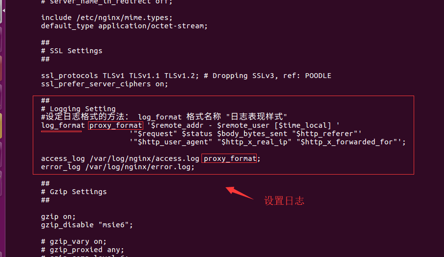
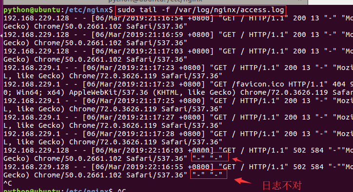
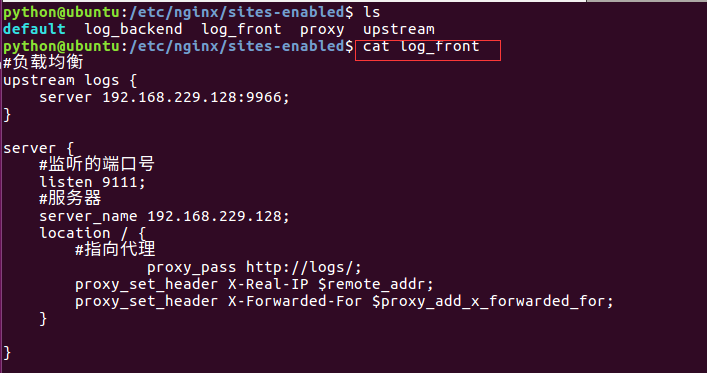
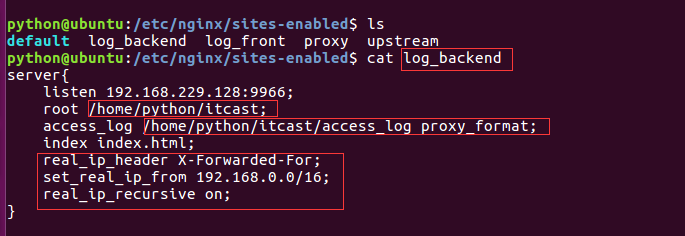
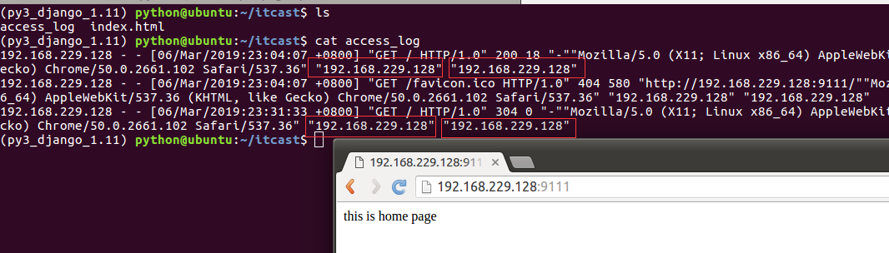

自定义日志
设置日志格式
修改/etc/nginx/nginx.conf中的日志文件
# Logging Setting
#设定日志格式的方法： log_format 格式名称 "日志表现样式"
log_format proxy_format '$remote_addr - $remote_user [$time_local] '
'"$request" $status $body_bytes_sent "$http_referer"'
'"$http_user_agent" "$http_x_real_ip" "$http_x_forwarded_for"';
access_log /var/log/nginx/access.log proxy_format;
error_log /var/log/nginx/error.log;

使用日志格式：
access_log 日志路径 格式名称;
检查nginx配置后重载服务
/usr/sbin/nginx -t
systemctl reload nginx
运行效果
python@ubuntu:/etc/nginx$ sudo tail -f /var/log/nginx/access.log
192.168.229.128 - - [06/Mar/2018:21:16:54 +0800] "GET / HTTP/1.1" 200 13 "-" "Mozilla/5.0 (X11; Linux x86_64) AppleWebKit/537.36 (KHTML, like Gecko) Chrome/50.0.2661.102 Safari/537.36"
192.168.229.128 - - [06/Mar/2018:21:16:59 +0800] "GET / HTTP/1.1" 200 13 "-" "Mozilla/5.0 (X11; Linux x86_64) AppleWebKit/537.36 (KHTML, like Gecko) Chrome/50.0.2661.102 Safari/537.36"
192.168.229.128 - - [06/Mar/2018:22:16:03 +0800] "GET / HTTP/1.1" 502 584 "-""Mozilla/5.0 (X11; Linux x86_64) AppleWebKit/537.36 (KHTML, like Gecko) Chrome/50.0.2661.102 Safari/537.36" "-" "-"
192.168.229.128 - - [06/Mar/2018:22:16:55 +0800] "GET / HTTP/1.1" 502 584 "-""Mozilla/5.0 (X11; Linux x86_64) AppleWebKit/537.36 (KHTML, like Gecko) Chrome/50.0.2661.102 Safari/537.36" "-" "-"

负载均衡配置文件
创建log_front配置文件
#负载均衡
upstream logs {
server 192.168.229.128:9966;
}
server {
#监听的端口号
listen 9111;
#服务器
server_name 192.168.229.128;
location / {
#指向代理
proxy_pass http://logs/;
proxy_set_header X-Real-IP $remote_addr;
proxy_set_header X-Forwarded-For $proxy_add_x_forwarded_for;
}
}

后端代理配置文件
创建log_backend配置文件
server{
listen 192.168.229.128:9966;
root /home/python/itcast;
access_log /home/python/itcast/access_log proxy_format;
index index.html;
real_ip_header X-Forwarded-For;
set_real_ip_from 192.168.0.0/16;
real_ip_recursive on;
}

在root /home/python/itcast的路径下创建一个index.html文件

检查nginx配置后重载服务
/usr/sbin/nginx -t
systemctl reload nginx
查看效果

查看日志：
192.168.229.128 - - [06/Mar/2018:23:04:07 +0800] "GET / HTTP/1.0" 200 18 "-""Mozilla/5.0 (X11; Linux x86_64) AppleWebKit/537.36 (KHTML, like Gecko) Chrome/50.0.2661.102 Safari/537.36" "192.168.229.128" "192.168.229.128"
192.168.229.128 - - [06/Mar/2018:23:04:07 +0800] "GET /favicon.ico HTTP/1.0" 404 580 "http://192.168.229.128:9111/""Mozilla/5.0 (X11; Linux x86_64) AppleWebKit/537.36 (KHTML, like Gecko) Chrome/50.0.2661.102 Safari/537.36" "192.168.229.128" "192.168.229.128"
192.168.229.128 - - [06/Mar/2018:23:31:33 +0800] "GET / HTTP/1.0" 304 0 "-""Mozilla/5.0 (X11; Linux x86_64) AppleWebKit/537.36 (KHTML, like Gecko) Chrome/50.0.2661.102 Safari/537.36" "192.168.229.128" "192.168.229.128"